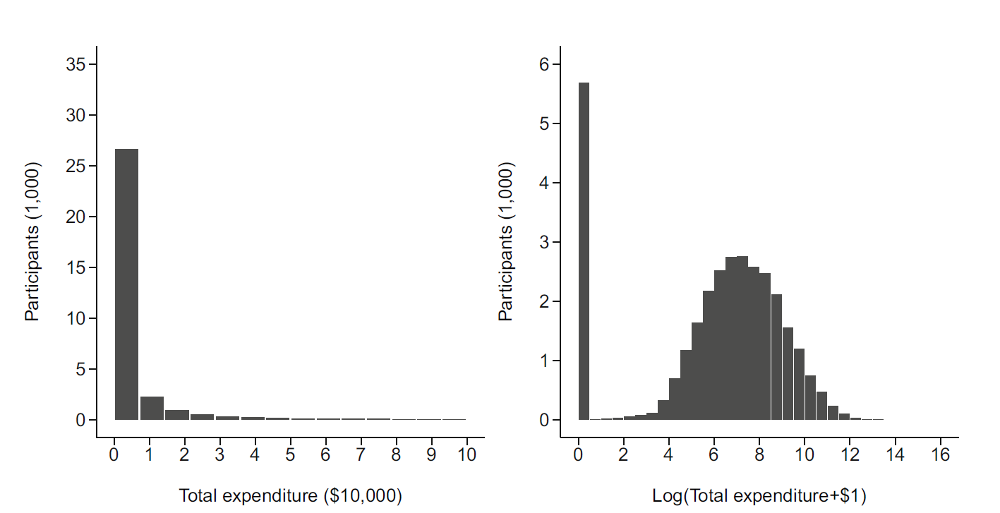
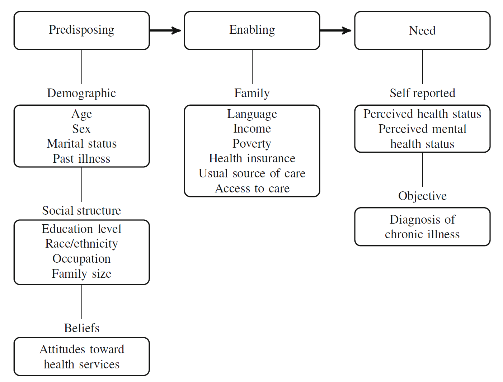

보건의료 자료는 의료 제공, 의료 이용, 비용, 치료 결과, 질병의 발생과 진행을 이해하기 위한 핵심 자원이다. 대규모 환자 데이터베이스를 이용하면 임상시험만으로는 포착하기 어려운 실제 진료 환경의 현상을 탐색할 수 있다. 예를 들어, 수십만 명의 고혈압 환자 자료에서 지나치게 낮은 혈압이 사망 또는 말기신질환 위험과 관련될 수 있다는 패턴을 확인하거나, 수천만 명의 보험 청구자료에서 저혈당 입원이 고혈당 입원을 추월하는 추세를 발견할 수 있다. 이러한 결과는 곧바로 인과관계를 증명하지는 않지만, 기존 치료 전략을 재검토하게 하는 중요한 연구 질문을 제기한다.
이 책에서 말하는 보건의료 데이터 분석(health care data analytics)은 다양한 현대 보건의료 자료와 통계적·계산적 방법을 사용하여 의료의 제공, 이용, 비용 및 결과를 연구하는 활동 전체를 뜻한다. 이 분야에서는 고전적 회귀모형, 일반화선형모형, 표본조사 방법, 인과추론과 함께 정규화 회귀, 의사결정나무와 같은 예측 알고리즘도 함께 사용된다.
중요핵심 관점
좋은 분석은 데이터가 많거나 복잡한 모형을 사용한다고 해서 자동으로 만들어지지 않는다. 먼저 명확한 연구 질문을 세우고, 그 질문에 답할 수 있는 자료원과 분석 설계를 선택해야 한다.
1.2 모집단, 표본, 추정대상
통계학의 출발점은 관찰된 표본 자체가 아니라, 표본을 통해 알고자 하는 더 큰 대상인 모집단(population)을 명확히 정의하는 것이다. 보건의료 연구에서는 모집단이 단순히 “모든 환자”처럼 추상적으로 정의되지 않는다. 질환, 연령, 진료 환경, 보험 자격, 지역, 달력시간, 추적 가능성까지 포함하여 구체적으로 기술해야 한다.
예를 들어 “당뇨병 환자의 의료비”를 연구한다고 할 때 다음 모집단은 서로 다르다.
특정 대학병원에 내원한 당뇨병 환자
국민건강보험에 등록된 성인 당뇨병 환자
새롭게 당뇨병을 진단받은 환자
인슐린 치료를 시작한 환자
합병증이 없는 초기 당뇨병 환자
모집단이 달라지면 질병 중증도, 의료 접근성, 치료 선택, 예후가 달라지므로 동일한 분석법을 적용하더라도 결과의 의미는 달라진다.
표본에서 계산되는 평균, 비율, 회귀계수는 그 자체가 최종 목적이 아니다. 연구자가 궁극적으로 알고자 하는 모집단의 수량을 추정대상(estimand)이라고 한다. 대표적인 추정대상은 다음과 같다.
연구 목적
추정대상의 예
질병 부담 기술
특정 연도의 유병률, 발생률, 평균 의료비
집단 비교
치료군과 비교군의 평균 결과 차이
연관성 평가
공변량을 조정한 회귀계수 또는 오즈비
인과효과 평가
평균처치효과, 처치군 평균처치효과
예후 예측
향후 1년 내 사건 발생확률
생존 분석
특정 시점의 생존확률 또는 제한평균생존시간
좋은 연구 질문은 모집단, 노출 또는 치료, 비교대상, 결과, 시간 범위와 함께 추정대상을 포함한다. 이를 명확히 하지 않으면 같은 자료와 같은 모형에서도 서로 다른 답이 나올 수 있다.
힌트연구 질문을 추정대상으로 바꾸기
“운동이 건강에 좋은가?”보다 “40세 이상 성인에서 주 150분 이상 중등도 신체활동을 하는 경우와 하지 않는 경우의 5년 심혈관질환 누적발생위험 차이는 얼마인가?”가 통계적으로 더 명확한 질문이다.
1.3 통계학과 유기적 통계학
통계학은 자료를 통해 현실을 이해하는 학문이다. 통계 분석은 다음과 같은 연속적인 과정으로 볼 수 있다.
실무에서는 통계학을 특정 상황에 맞는 검정법이나 회귀모형을 골라 적용하는 기술로 오해하기 쉽다. 그러나 모형 적합은 전체 분석 과정의 한 단계일 뿐이다. 같은 자료에 여러 모형을 적합할 수 있지만, 연구 목적과 자료 생성 과정에 맞지 않는 모형은 그럴듯한 숫자를 산출하더라도 타당한 결론을 보장하지 않는다.
이 책이 강조하는 유기적 통계학(organic statistics)은 통계 방법을 서로 분리된 조리법의 목록으로 배우지 않고, 앞에서 습득한 개념 위에 새로운 개념을 논리적으로 연결해 이해하는 접근이다. 어떤 모형을 사용하는지뿐 아니라 다음을 함께 이해해야 한다.
그 모형이 왜 필요한가?
어떤 자료 생성 과정을 전제로 하는가?
다른 방법보다 어떤 장점이 있는가?
어떤 가정이 필요하며, 그 가정이 위반되면 무엇이 달라지는가?
결과를 연구 질문의 언어로 어떻게 되돌려 해석할 것인가?
이러한 관점은 보건의료 데이터에서 특히 중요하다. 보건의료 결과변수는 정규분포를 따르지 않는 경우가 많고, 0이 과도하게 많거나, 오른쪽 꼬리가 매우 길거나, 반복 측정과 군집 구조를 포함하기 때문이다.
1.4 통계적 방법과 모형
1.4.1 자료 생성 과정과 확률 모형
통계 모형은 관찰된 자료에 임의로 식을 맞추는 과정이 아니라, 자료가 어떤 과정을 거쳐 생성되었는지를 단순화하여 표현한 것이다. 보건의료 자료의 생성 과정은 대체로 다음 요소로 구성된다.
\[
\text{생물학적 상태}
\rightarrow
\text{증상과 의료 필요}
\rightarrow
\text{의료 접근 및 의사결정}
\rightarrow
\text{검사·진단·치료}
\rightarrow
\text{기록과 코딩}
\rightarrow
\text{분석 자료}
\]
따라서 분석 자료에 기록된 변수는 환자의 실제 건강상태를 완전하게 반영하지 않는다. 진단코드는 질병 자체뿐 아니라 의료기관 방문, 검사 시행, 의사의 판단, 상환 규칙의 영향을 받는다. 검사값은 검사를 받은 사람에게만 관찰되며, 치료는 임상 상태에 따라 선택된다. 이러한 과정은 선택 편향, 측정오차, 정보성 결측, 적응증에 의한 교란을 만들어 낼 수 있다.
확률 모형은 이러한 복잡한 현실을 몇 개의 핵심 요소로 단순화한다. 예를 들어 연속형 결과 \(Y_i\)에 대한 선형모형은 다음과 같이 쓸 수 있다.
여기서 \(\mu_i\)는 관찰된 공변량으로 설명되는 체계적 부분이고, \(\varepsilon_i\)는 모형이 설명하지 못한 개인 간 차이와 측정 변동을 나타낸다. 중요한 점은 오차항이 단순히 “쓸모없는 잡음”이 아니라, 관찰되지 않은 요인과 자료 생성 과정의 불완전성을 포함한다는 것이다.
1.4.2 불확실성의 세 가지 원천
보건의료 연구의 불확실성은 표본오차만으로 설명되지 않는다. 최소한 다음 세 원천을 구분해야 한다.
표본 변동(sampling variability): 동일한 모집단에서 다른 표본을 뽑으면 추정값이 달라지는 현상
측정 불확실성(measurement uncertainty): 진단코드, 설문응답, 검사값, 사건일의 오차로 인한 변동
모형 불확실성(model uncertainty): 변수 선택, 함수 형태, 분포 가정, 결측 처리 방식에 따른 차이
표준오차와 신뢰구간은 주로 첫 번째 불확실성을 다룬다. 그러나 측정오차나 모형 선택의 불확실성이 크면 좁은 신뢰구간도 실제 연구의 불확실성을 과소평가할 수 있다. 따라서 민감도 분석, 대안적 변수 정의, 다른 모형과의 비교가 필요하다.
1.4.3 설명 중심의 통계적 추론
전통적 통계 분석은 관찰된 결과의 변이를 만들어 내는 생물학적, 임상적, 사회경제적 기전을 설명하는 데 관심을 둔다. 이때 관찰된 자료는 대체로 다음 두 요소로 나눌 수 있다.
체계적 변이는 연령, 질병 중증도, 치료, 사회경제적 수준과 같은 요인으로 설명되는 부분이며, 우연 변이는 측정오차와 개인 간 설명되지 않은 차이를 포함한다. 통계적 추론은 이 두 부분을 분리하고, 관찰된 연관성이 우연만으로 설명될 가능성을 정량화한다.
가설검정은 잘못된 기전을 발견했다고 결론 내리는 오류를 통제하기 위한 틀을 제공한다. 그러나 검정 결과의 타당성은 표본추출, 연구 설계, 독립성, 분포 및 모형 형태와 같은 가정에 의존한다.
1.4.4 보건의료 결과의 비정규성
보건의료 이용량과 비용은 대개 대칭적인 정규분포를 따르지 않는다. 의료비 자료는 다음 두 특성을 동시에 보이는 경우가 많다.
일정 기간 의료서비스를 이용하지 않은 사람이 많아 0이 다수 존재한다.
소수의 중증 환자에게 매우 큰 비용이 발생하여 오른쪽 꼬리가 길다.

왼쪽 패널은 원척도 총 의료비의 극심한 오른쪽 치우침을 보여준다. 오른쪽 패널은 \(\log(Y+1)\) 변환 후의 분포로, 비용이 0인 집단과 양의 비용을 가진 집단이 보다 명확히 구분된다. \(1\)을 더하는 이유는 \(\log(0)\)이 정의되지 않기 때문이다.
이러한 자료에는 단순 선형회귀만으로 충분하지 않다. 상황에 따라 다음 방법이 필요하다.
연속형 평균을 위한 선형회귀
이항 결과를 위한 로지스틱 회귀
계수 결과를 위한 포아송 및 음이항 회귀
오른쪽 치우친 양의 결과를 위한 로그정규 또는 감마 회귀
0과 양의 값을 분리하는 이부분 모형
복합표본조사를 위한 가중·층화·군집 분석
인과효과를 위한 성향점수, 가중, 매칭
예측을 위한 정규화 회귀와 트리 기반 알고리즘
1.4.5 개념적 모형과 분석 모형
통계 모형은 임의의 변수 집합이 아니라 연구자가 가정하는 임상적·사회적 기전을 수학적으로 표현한 것이다. 보건의료 이용 연구에서 널리 사용되는 Andersen-Newman 모형은 의료 이용의 결정요인을 다음 세 범주로 나눈다.
소인 요인(predisposing factors): 연령, 성별, 혼인상태, 과거질환, 교육, 인종·민족, 직업, 가족 규모, 의료서비스에 대한 태도
가능 요인(enabling factors): 언어, 소득, 빈곤, 건강보험, 통상적 의료기관, 의료 접근성
필요 요인(need factors): 주관적 건강상태, 정신건강 인식, 만성질환 진단 등

개념적 모형은 어떤 변수를 교란요인으로 조정하고, 어떤 변수를 매개변수로 보아야 하는지를 결정하는 데 도움을 준다. 예를 들어 신체활동과 의료비의 관계를 연구할 때 연령과 기존 만성질환은 교란요인이 될 수 있다. 반면 체질량지수나 주관적 건강상태는 신체활동의 효과가 의료비로 전달되는 경로에 놓인 매개변수일 수 있으므로 연구 목적에 따라 조정에서 제외해야 할 수 있다.
1.4.6 연관성, 인과성, 예측의 구분
보건의료 연구에서 세 질문은 자주 혼동되지만 서로 다른 논리를 요구한다.
연관성 질문: 두 변수는 다른 요인을 고려한 후에도 함께 변하는가?
인과 질문: 노출이나 치료를 개입으로 바꾸면 결과가 달라지는가?
예측 질문: 현재 이용 가능한 정보로 미래 결과를 얼마나 정확히 맞출 수 있는가?
연관성은 인과성을 의미하지 않는다. 예를 들어 중증 환자에게 더 강한 치료가 처방되고 그 환자들의 사망률이 높다면, 관찰자료에서는 강한 치료와 사망이 양의 연관성을 보일 수 있다. 그러나 이는 치료가 사망을 증가시켰기 때문이 아니라 중증도가 치료 선택과 사망 모두에 영향을 주었기 때문일 수 있다. 이를 적응증에 의한 교란(confounding by indication)이라고 한다.
인과효과를 정의하려면 한 개인이 치료를 받은 경우의 결과와 받지 않은 경우의 결과를 개념적으로 비교해야 한다. 개인 \(i\)의 잠재결과를 \(Y_i(1)\)과 \(Y_i(0)\)으로 나타내면 평균처치효과는 다음과 같다.
\[
\operatorname{ATE}
=
E\{Y(1)-Y(0)\}
\]
그러나 동일한 개인에게 두 치료 상태를 동시에 관찰할 수 없으므로 인과효과는 직접 계산되지 않는다. 무작위배정 또는 교환가능성, 양성성, 일관성 같은 가정과 적절한 연구 설계가 필요하다.
반면 예측에서는 인과적 변수가 아니더라도 새로운 대상의 결과를 잘 예측하면 유용할 수 있다. 예를 들어 과거 입원 횟수는 개입 가능한 원인이 아닐 수 있지만 향후 의료비 예측에는 강한 변수일 수 있다. 따라서 인과모형의 변수 선택 원칙을 예측모형에 그대로 적용하거나, 반대로 예측력을 이유로 인과모형에 모든 변수를 넣는 것은 적절하지 않다.
1.4.7 예측 중심의 분석
예측 분석은 반드시 자료 생성 기전을 밝히려 하지 않는다. 핵심 목표는 새로운 개인이나 새로운 시점의 결과를 정확히 예측하는 것이다. 따라서 모형의 계수 해석보다 외부 자료에서의 예측오차가 더 중요하다.
설명 중심 분석과 예측 중심 분석의 차이는 다음과 같다.
구분
설명·추론 중심
예측 중심
핵심 질문
어떤 요인이 결과와 관련되는가?
새로운 대상의 결과를 얼마나 정확히 예측하는가?
변수 선택
이론과 개념적 모형 중심
예측 성능 중심
모형 평가
계수, 신뢰구간, 가설검정, 적합도
교차검증, 테스트 오차, AUC, RMSE
해석 가능성
매우 중요
때로는 정확도보다 덜 중요
일반화 기준
모집단 추론의 타당성
새로운 자료에서의 성능
두 접근은 경쟁 관계라기보다 서로 다른 연구 목적에 적합한 도구이다. 같은 회귀모형도 설명과 예측에 사용할 수 있지만, 목적에 따라 변수 선택, 모형 복잡도, 검증 방법, 성능 지표가 달라진다.
1.5 보건의료 자료의 주요 유형
보건의료 연구에서 자료원은 연구 질문의 범위, 변수의 정의, 편향의 종류, 가능한 분석 방법을 결정한다. 주요 자료원은 의료비 청구자료, 전자의무기록, 건강조사, 질병등록자료로 구분할 수 있다.
1.5.1 자료원별 정보 범위
정보 범주
청구자료
전자의무기록
건강조사
질병등록자료
인구사회학적 특성
●
●
●
●
진단 및 처치
●
●
일부
●
약제 처방·조제
●
●
일부
일부
검사결과·생체측정
제한적
●
일부 조사에서 ●
제한적
의료비·지불
●
제한적
일부
제한적
건강행태
거의 없음
제한적
●
거의 없음
주관적 건강·삶의 질
거의 없음
제한적
●
제한적
장기 추적
보험자 유지 시 가능
기관 내 가능
설계에 따라 다름
대체로 가능
대표성
가입자·보험자 기준
진료기관 이용자 기준
표본설계에 따라 높음
등록지역·질환 기준
점은 해당 자료원이 일반적으로 그 범주의 정보를 제공함을 뜻한다. 실제 포함 변수와 품질은 데이터베이스마다 다르므로 자료 사전과 수집 프로토콜을 반드시 확인해야 한다.
1.5.2 의료비 청구자료
의료비 청구자료는 보험자에게 비용을 청구하기 위해 생성된 행정자료이다. 대규모 인구집단의 진단, 시술, 입원, 외래 방문, 약제 조제, 비용을 장기간 추적할 수 있다는 장점이 있다.
장점
표본 규모가 매우 크고 희귀 사건 연구가 가능하다.
의료 이용과 비용이 비교적 완전하게 기록된다.
반복 방문과 장기 추적이 가능하다.
실제 진료 환경의 패턴을 반영한다.
한계
임상적 목적이 아니라 지불을 위해 생성되므로 코딩 오류와 상환 유인이 존재한다.
질병 중증도, 검사 수치, 생활습관, 사회적 요인이 부족하다.
보험 변경이나 자격 상실 시 추적이 중단될 수 있다.
코드가 실제 질병 발생일이 아니라 청구 시점을 반영할 수 있다.
청구자료 분석에서는 단일 진단코드만으로 환자를 정의하기보다 반복 진단, 입원 진단, 약제 처방과 같은 알고리즘을 조합하여 사례 정의의 민감도와 특이도를 높이는 것이 중요하다.
1.5.3 전자의무기록
전자의무기록은 진료 과정에서 생성되는 임상자료이다. 진단과 처치뿐 아니라 활력징후, 검사결과, 영상·병리 보고서, 임상 노트, 약물 처방, 알레르기와 같은 풍부한 정보를 포함한다.
장점
청구자료보다 임상적 세부 정보가 풍부하다.
시간에 따른 검사값과 치료 반응을 분석할 수 있다.
자연어 임상기록과 영상자료를 활용할 수 있다.
한계
자료 형식과 코드 체계가 기관별로 다르다.
다른 기관에서 받은 진료는 누락될 수 있다.
검사 시행 여부 자체가 임상 의사결정의 결과이므로 정보성 결측이 발생한다.
복사·붙여넣기, 단위 불일치, 비정형 텍스트 등 데이터 정제 부담이 크다.
전자의무기록에서 결측은 단순한 자료 손실이 아닐 수 있다. 특정 검사가 시행되지 않았다는 사실은 의사가 검사가 필요하지 않다고 판단했다는 정보를 담을 수 있다. 따라서 결측 메커니즘을 임상 과정과 함께 해석해야 한다.
1.5.4 건강조사
건강조사는 표본으로 선정된 개인에게 인구사회학적 특성, 건강행태, 질환, 의료 접근성, 주관적 건강, 의료 이용을 직접 질문한다. 일부 조사는 신체검사와 혈액검사를 결합한다.
장점
흡연, 음주, 식이, 운동, 삶의 질과 같이 행정자료에 없는 변수를 수집한다.
적절한 표본설계와 가중치를 사용하면 모집단 수준의 추정이 가능하다.
인지된 건강상태와 의료 접근성을 측정할 수 있다.
한계
비응답 편향, 회상 편향, 사회적 바람직성 편향에 취약하다.
희귀 질환이나 희귀 사건 연구에는 표본수가 부족할 수 있다.
자기보고 진단은 객관적 임상기록과 다를 수 있다.
층화, 군집, 가중을 무시하면 표준오차와 모집단 추정이 잘못된다.
1.5.5 질병등록자료
질병등록자료는 특정 질환이나 임상 사건을 체계적으로 확인하고 추적하기 위해 구축된다. 암등록자료가 대표적이며, 진단일, 병기, 조직학, 초기 치료, 생존 상태를 장기간 수집한다.
장점
질환 정의가 비교적 표준화되어 있다.
발생률, 생존율, 치료 패턴의 시간 추세를 분석하기 좋다.
지역 또는 국가 단위의 질병 부담을 추정할 수 있다.
한계
관심 질환 외 동반질환과 건강행태 정보가 제한적이다.
치료 세부 정보와 재발 정보가 충분하지 않을 수 있다.
등록지역 밖 이동과 사망 확인 방식에 따라 추적 손실이 발생한다.
등록자료는 청구자료, 사망자료, 전자의무기록과 연계할 때 분석 가능성이 크게 확장된다. 그러나 연계 과정에서는 개인정보 보호, 식별오류, 연계 누락을 고려해야 한다.
1.5.6 관찰단위, 분석단위, 시간축
보건의료 데이터는 한 행이 한 사람이라는 단순한 구조만을 갖지 않는다. 한 환자에게 여러 방문, 처방, 검사, 입원, 진단이 반복될 수 있으며, 의료기관이나 지역 안에 환자가 군집될 수 있다.
관찰단위(observation unit): 자료의 한 행이 나타내는 단위
분석단위(unit of analysis): 통계적 결론을 내리는 기본 단위
군집단위(cluster unit): 관측값들이 상관될 수 있는 상위 단위
시간원점(time zero): 추적을 시작하는 기준 시점
예를 들어 청구명세서 자료에서 한 행은 하나의 진료행위일 수 있지만, 연구 질문은 환자별 연간 의료비에 관한 것일 수 있다. 이 경우 명세서 수준의 자료를 환자 수준으로 집계해야 한다. 반대로 환자별 반복 측정을 독립 관측치로 간주하면 표준오차가 과소추정될 수 있다.
시간원점의 정의도 중요하다. 진단일, 첫 처방일, 수술일, 퇴원일은 서로 다른 임상적 의미를 가진다. 노출 측정기간과 결과 추적기간이 겹치거나, 연구 참여에 생존해야 하는 기간이 포함되면 불멸시간 편향이 발생할 수 있다.
경고분석 전에 반드시 확인할 구조
한 행이 무엇을 의미하는지, 한 사람에게 몇 개의 행이 있는지, 시간변수가 어떤 사건을 기준으로 기록되는지 확인하지 않은 상태에서 모형을 적합해서는 안 된다.
1.6 연구 질문과 자료원의 연결
자료 선택은 단순히 접근 가능한 자료 중 하나를 고르는 과정이 아니다. 다음 순서가 권장된다.
목표 모집단을 정의한다.
노출, 결과, 시간 순서, 추적기간을 명시한다.
필요한 교란요인과 매개변수를 개념적 모형으로 정리한다.
각 변수의 측정 가능성과 정확도를 자료원별로 평가한다.
선택 편향, 정보 편향, 결측, 추적 손실의 가능성을 검토한다.
연구 목적이 설명, 인과추론, 예측 중 어디에 해당하는지 결정한다.
자료 구조에 맞는 통계 모형과 불확실성 평가 방법을 선택한다.
노트예시: 당뇨병과 연간 의료비
연구 질문이 “당뇨병 진단이 연간 총 의료비와 얼마나 관련되는가?”라면 청구자료나 의료비 조사가 적합하다. 그러나 당뇨병의 임상 중증도와 혈당 조절 상태를 함께 고려하려면 전자의무기록 또는 검사자료가 연계된 조사가 필요하다. 동일한 질문이라도 필요한 조정변수에 따라 최적 자료원이 달라진다.
1.7 재현 가능한 분석 환경
이 책의 예제는 R을 중심으로 구성한다. 각 분석은 자료 불러오기, 변수 생성, 기술통계, 시각화, 모형 적합, 진단, 결과표 생성이 순서대로 재현되도록 작성한다.
다음은 0이 많고 오른쪽 꼬리가 긴 의료비 자료의 핵심 구조를 모의자료로 재현하는 예이다. 원자료에 접근할 수 없는 환경에서도 코드의 작동 원리와 시각화 방법을 확인할 수 있다.